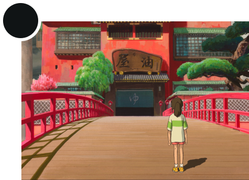
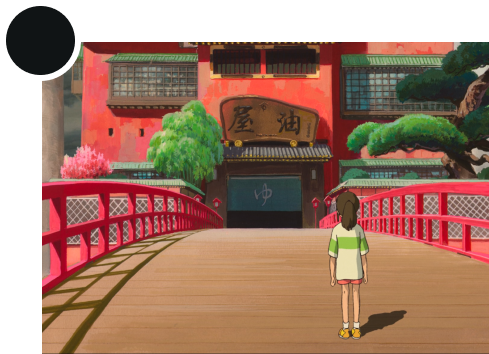
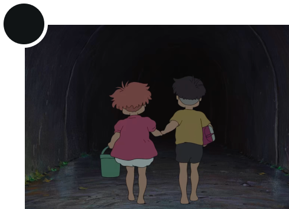
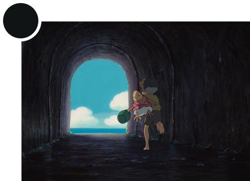
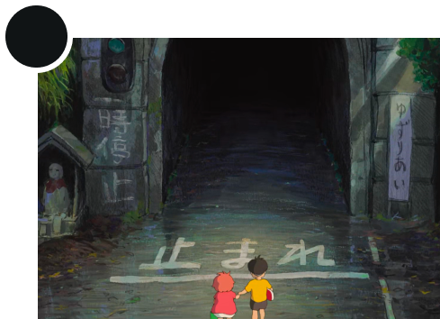
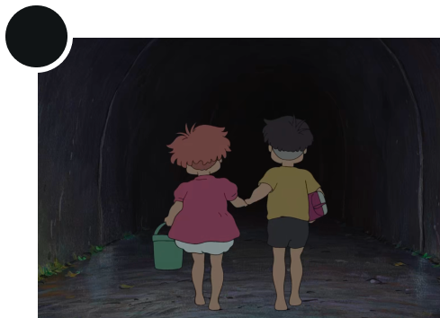
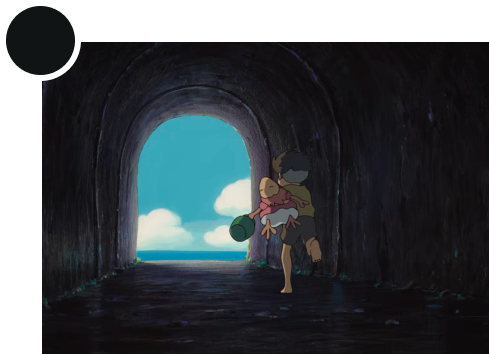
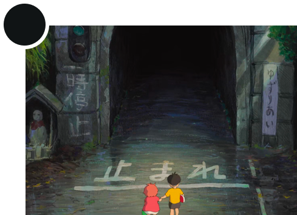
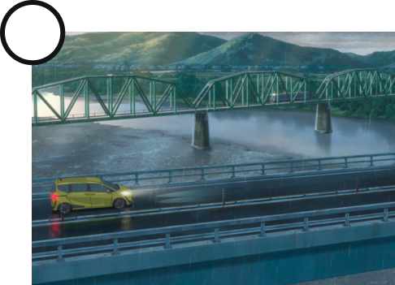
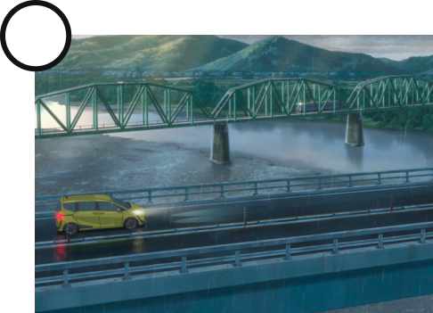

HASHI
Bridge between the earth and the spiritual world
Hashi is the bridge that connects the heaven and the earth in Japanese mythology. The Japanese word for bridge is hashi, which is also a homonym for the word “edge,” thus suggesting that a bridge connects one world to another. More than that, the word hashi also has a spiritual meaning, representing the metaphorical connection between the earthly world and the spiritual world. This connection is further represented by the duplicate reflection of the bridge and the surrounding vegetation in the water, suggesting self-examination and meditative reflection within the natural environment.
Text from asia453.wordpress.com/nitobe-garden/nitobe2016/nitobe-gardens-elements

Katsushika Hokusai, Yahagi Bridge at Okazaki on the Tôkaidô Road, 1834
 Implicit reference
Implicit reference
 Explicit reference
Explicit reference


 



 






 
